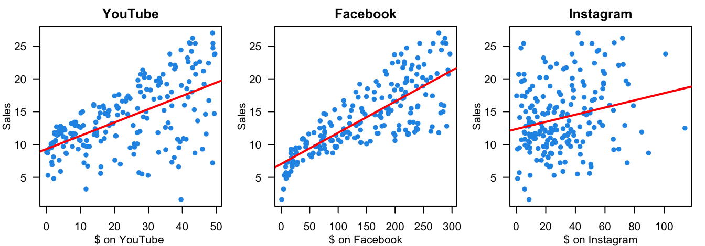
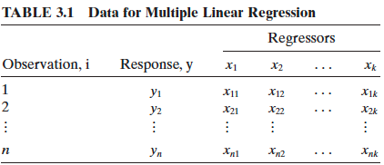
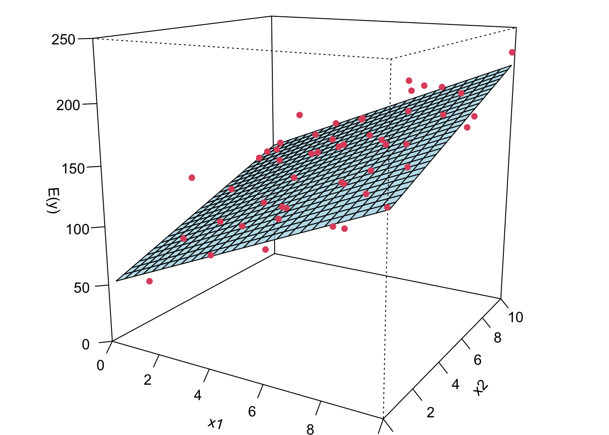
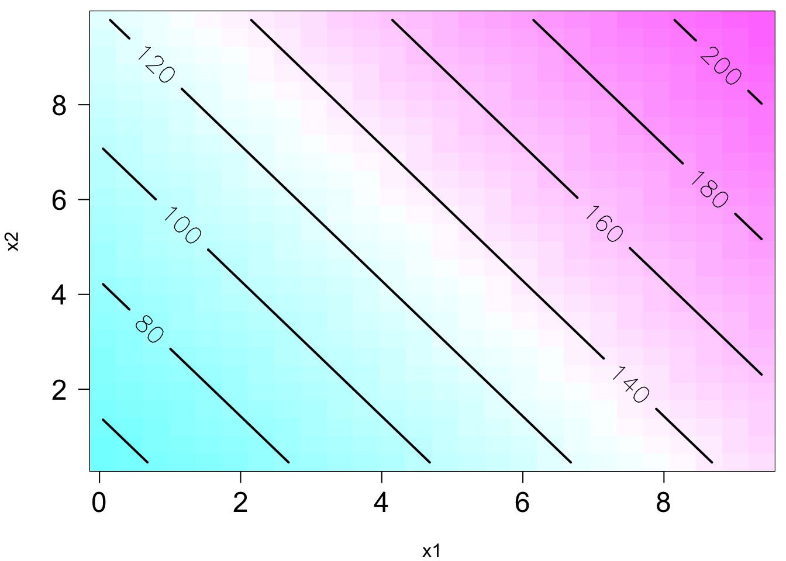
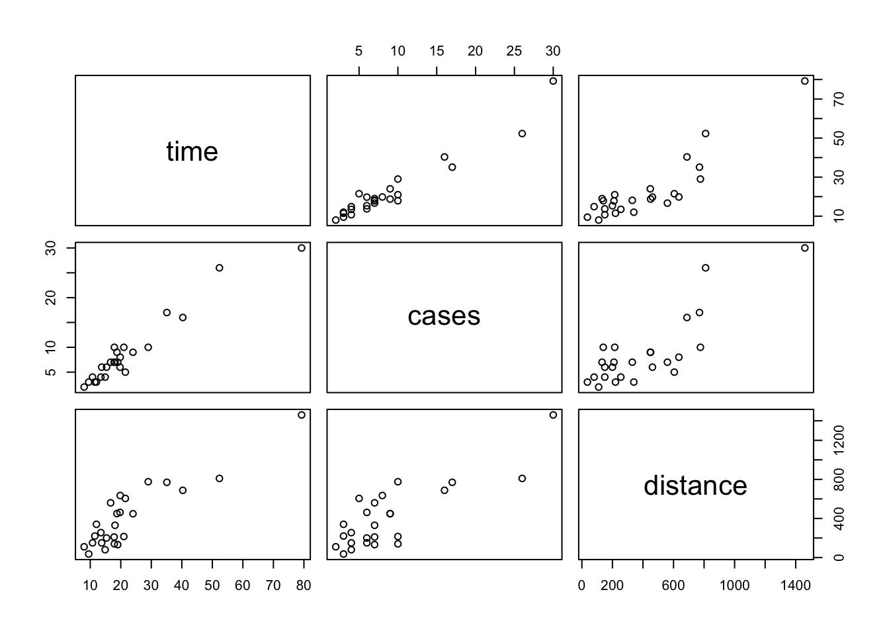
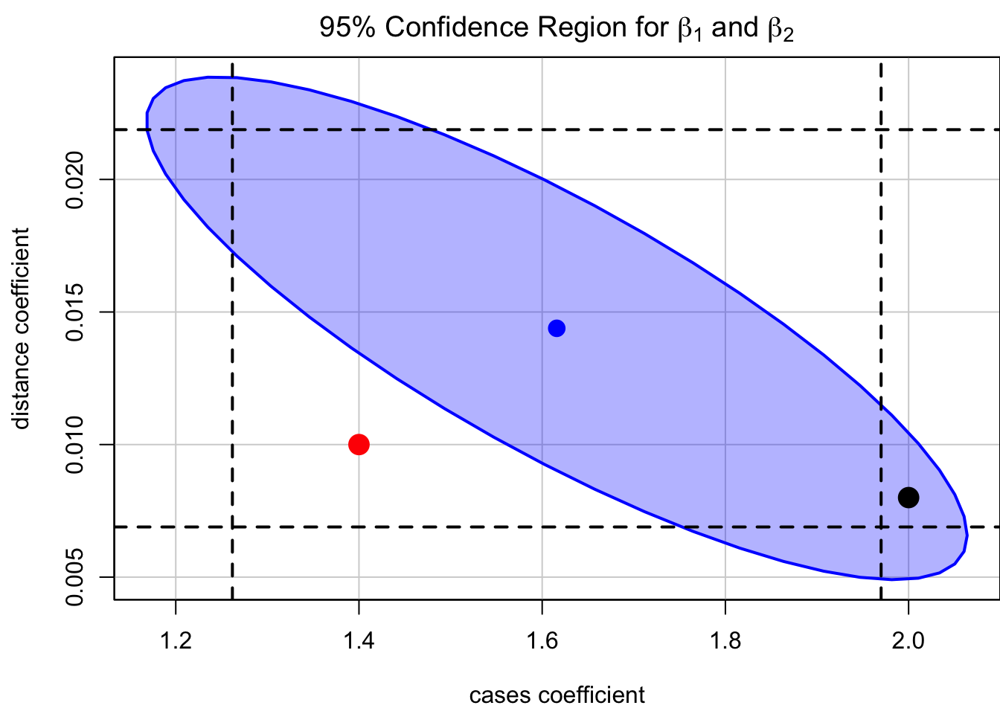
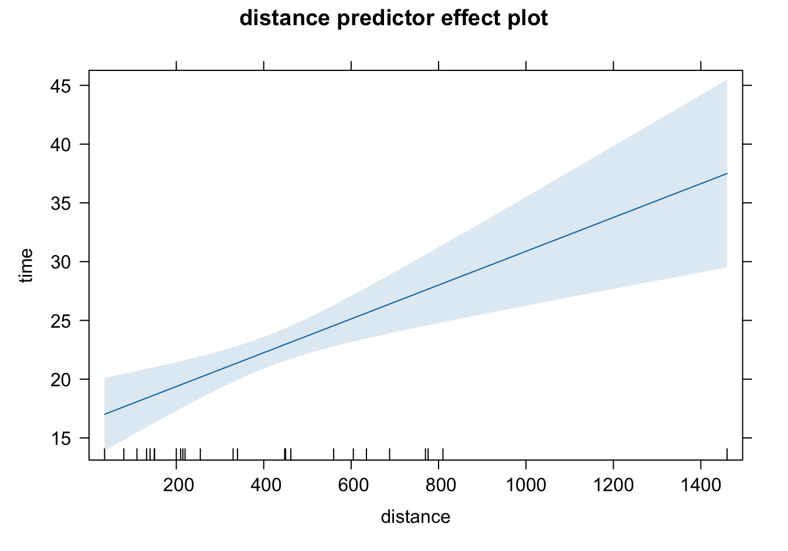
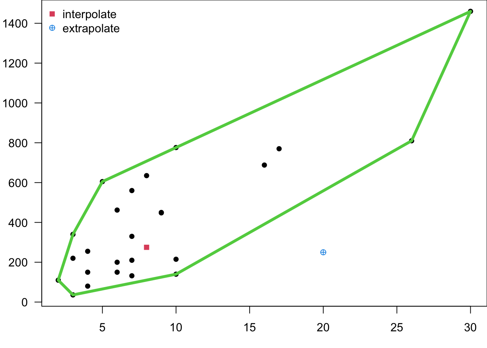

knitr::include_graphics("./images/img-model/yt.svg")
Our target response may be affected by several factors. - Total sales \((Y)\) and amount of money spent on advertising on YouTube (YT) \((X_1)\), Facebook (FB) \((X_2)\), Instagram (IG) \((X_3)\).
knitr::include_graphics("./images/img-model/yt.svg")
knitr::include_graphics("./images/img-model/fb.jpeg")
knitr::include_graphics("./images/img-model/ig.jpeg")
Fit three separate independent SLR models:
advertising_data <- read.csv("./data/Advertising.csv")
advertising_data <- advertising_data[, 2:5]
colnames(advertising_data) <- c("youtube", "facebook", "instagram", "sales")
par(mfrow = c(1, 3))
par(mar = c(3, 3, 2, 1), mgp = c(2, 1, 0))
plot(advertising_data$facebook, advertising_data$sales, xlab = "$ on YouTube ", ylab = "Sales", col = 4, pch = 16, las = 1, main = "YouTube")
abline(lm(advertising_data$sales ~ advertising_data$facebook), col = "red", lwd = 2)
plot(advertising_data$youtube, advertising_data$sales, xlab = "$ on Facebook", ylab = "Sales", col = 4, pch = 16, las = 1, main = "Facebook")
abline(lm(advertising_data$sales ~ advertising_data$youtube), col = "red", lwd = 2)
plot(advertising_data$instagram, advertising_data$sales, xlab = "$ on Instagram", ylab = "Sales", col = 4, pch = 16, las = 1, main = "Instagram")
abline(lm(advertising_data$sales ~ advertising_data$instagram), col = "red", lwd = 2)
. . .
❌ Fitting a separate SLR model for each predictor is not satisfactory.
. . .
. . .
I hope you don’t feel…
knitr::include_graphics("./images/img-model/mlr_depress.jpeg")
What I hope is…
knitr::include_graphics("./images/img-model/mlr_meme.jpeg")
. . .
. . .
. . .
. . .
How many parameters are there in the model?
knitr::include_graphics("./images/img-model/mlr_data_matrix.png")
x1 <- runif(50, 0, 10)
x2 <- runif(50, 0, 10)
x1x2 <- x1 * x2
x1_2 <- x1 ^ 2
x2_2 <- x2 ^ 2
mu <- 50 + 10 * x1 + 7 * x2
mu_interact <- 50 + 10 * x1 + 7 * x2 + 5 * x1x2
mu_order2_interact <- 800 + 10 * x1 + 7 * x2 - 8.5 * x1_2 - 5 * x2_2 + 4 * x1x2
df <- data.frame("x1" = x1, "x2" = x2, "y" = mu)
# df_interact <- data.frame("x1" = x1, "x2" = x2, "x1x2" = x1x2, "y" = mu_interact)
# df_order2_interact <- data.frame("x1" = x1, "x2" = x2, "x1_sq" = x1_2,
# "x2_sq" = x2_2, "x1x2" = x1x2,
# "y" = mu_order2_interact)
my_lm <- lm(mu ~ x1 + x2, data = df)
my_lm_interact <- lm(mu_interact ~ x1*x2, data = df)
# my_lm_interact <- lm(mu_interact ~ x1*x2, data = df)
# my_lm_order2_interact <- lm(mu_order2_interact ~ x1 + x2 + x1_sq + x2_sq + x1x2, data = df_order2_interact)
my_lm_order2_interact <- lm(mu_order2_interact ~ poly(x1, x2, degree = 2,
raw = TRUE),
data = df)par(mar = c(0, 0, 0, 0))
surf <- rsm::persp.lm(my_lm, x2 ~ x1, zlab = "E(y)", xlim = c(0, 10), ylim = c(0, 10), zlim = c(0, 250), theta = 30, phi = 15,
col = grDevices::adjustcolor( "lightblue", alpha.f = 0.8))
points(trans3d(x1, x2, mu + rnorm(50, sd = 20),
pmat = surf$`x1 ~ x2`$transf), col = 2, pch = 16)
par(mar = c(4, 4, 0.5, 0.5))
rsm::contour.lm(my_lm, x2 ~ x1, image = TRUE, img.col = cm.colors(50),
labcex = 1.4, lwd = 2, cex.axis = 1.5, las = 1)Warning in plot.window(...): "labcex" is not a graphical parameterWarning in plot.xy(xy, type, ...): "labcex" is not a graphical parameterWarning in axis(side = side, at = at, labels = labels, ...): "labcex" is not a
graphical parameter
Warning in axis(side = side, at = at, labels = labels, ...): "labcex" is not a
graphical parameterWarning in box(...): "labcex" is not a graphical parameterWarning in title(...): "labcex" is not a graphical parameter
Now I’m gonna show you what a MLR looks like when we fit it to the data.
If we have two predictors, we will have a sample regression plane.
If we have more than two predictors in the model, we are not able to visualize it, but the idea is the same.
We will have a something called hyperplane or response surface that basically play the same role as the regression plane in 2D or regression line in 1D.
The plot on the right is the contour plot when we project the plot onto the x1-x2 plane. You can see that basically the higher x1 and/or the higher x2, the higher value of y.
Moreover, you can see that the level curves are straight and parallel, meaning that the effect of x1 on y does not change with the values of x2 or the effect does not depend on the level of x2.
https://cran.r-project.org/web/packages/rsm/vignettes/rsm-plots.pdf
http://www.sthda.com/english/wiki/scatterplot3d-3d-graphics-r-software-and-data-visualization
https://stackoverflow.com/questions/18147595/plot-3d-plane-true-regression-surface
par(mar = c(0, 0, 0, 0))
surf_interact <- rsm::persp.lm(my_lm_interact, x2 ~ x1, zlab = "E(y)", xlim = c(0, 10), ylim = c(0, 10), zlim = c(0, 800), theta = 30, phi = 15, col = grDevices::adjustcolor( "lightblue", alpha.f = 0.8))
points(trans3d(x1, x2, mu_interact + rnorm(50, sd = 50),
pmat = surf_interact$`x1 ~ x2`$transf), col = 2, pch = 16)
par(mar = c(4, 4, 0.5, 0.5))
rsm::contour.lm(my_lm_interact, x2 ~ x1, image = TRUE,
img.col = cm.colors(50), las = 1,
labcex = 1.4, lwd = 2, cex.axis = 1.5)Warning in plot.window(...): "labcex" is not a graphical parameterWarning in plot.xy(xy, type, ...): "labcex" is not a graphical parameterWarning in axis(side = side, at = at, labels = labels, ...): "labcex" is not a
graphical parameter
Warning in axis(side = side, at = at, labels = labels, ...): "labcex" is not a
graphical parameterWarning in box(...): "labcex" is not a graphical parameterWarning in title(...): "labcex" is not a graphical parameter
par(mar = c(0, 0, 0, 0))
surf_order2_interact <- rsm::persp.lm(my_lm_order2_interact, x2 ~ x1, zlab = "E(y)", xlim = c(0, 10), ylim = c(0, 10), zlim = c(0, 1000), theta = 30, phi = 15, col = grDevices::adjustcolor( "lightblue", alpha.f = 0.8))
points(trans3d(x1, x2, mu_order2_interact + rnorm(50, sd = 50),
pmat = surf_order2_interact$`x1 ~ x2`$transf), col = 2, pch = 16)
par(mar = c(4, 4, 0.5, 0.5))
rsm::contour.lm(my_lm_order2_interact, x2 ~ x1, image = TRUE,
img.col = cm.colors(50), las = 1,
labcex = 1.4, lwd = 2, cex.axis = 1.5)Warning in plot.window(...): "labcex" is not a graphical parameterWarning in plot.xy(xy, type, ...): "labcex" is not a graphical parameterWarning in axis(side = side, at = at, labels = labels, ...): "labcex" is not a
graphical parameter
Warning in axis(side = side, at = at, labels = labels, ...): "labcex" is not a
graphical parameterWarning in box(...): "labcex" is not a graphical parameterWarning in title(...): "labcex" is not a graphical parameter
\[\begin{align} y_i &= \beta_0 + \beta_1x_{i1} + \beta_2x_{i2} + \dots + \beta_k x_{ik} + \epsilon_i \\ &= \beta_0 + \sum_{j=1}^k\beta_j x_{ij} + \epsilon_i, \quad i = 1, 2, \dots, n \end{align}\]
# scatter plot
advertising_data <- read.csv("./data/Advertising.csv")
x <- advertising_data$TV
y <- advertising_data$radio
z <- advertising_data$sales
par(mgp = c(2, 0.8, 0), las = 1, mar = c(4, 4, 0, 0))
plot3d <- scatterplot3d::scatterplot3d(advertising_data$TV,
advertising_data$radio,
advertising_data$sales,
xlab = "X1", ylab = "X2", zlab = "Y",
color = rgb(0, 0, 1, 0.4), mar = c(3, 3, 0, 2),
angle = 30, pch = 16, box = FALSE, cex.symbols = 0.8)
# regression plane
adv_lm <- lm(sales ~ TV + radio, data = advertising_data)
plot3d$plane3d(adv_lm, lty.box = "solid", draw_lines = TRUE,
draw_polygon = TRUE, lwd = 0.1,
polygon_args = list(border = "green", col = rgb(0, 1, 0, 0.2)))
# overlay positive residuals
res_pos <- resid(adv_lm) > 0
plot3d$points3d(x[res_pos], y[res_pos], z[res_pos], pch = 16, col = "blue", cex = 0.8)
# compute locations of segments
orig <- plot3d$xyz.convert(x, y, z)
plane <- plot3d$xyz.convert(x, y, fitted(adv_lm))
i.negpos <- 1 + (resid(adv_lm) > 0) # which residuals are above the plane?
# draw residual distances to regression plane
segments(orig$x, orig$y, plane$x, plane$y, col = 1, lty = c(2, 1)[i.negpos],
lwd = 0.8)
#
# # draw the regression plane
# s3d$plane3d(LM, draw_polygon = TRUE, draw_lines = TRUE,
# polygon_args = list(col = rgb(0.8, 0.8, 0.8, 0.8)))
#
# redraw positive residuals and segments above the plane
# wh <- resid(adv_lm) > 0
# segments(orig$x[res_pos], orig$y[res_pos], plane$x[res_pos], plane$y[res_pos],
# col = "red", lty = 1, lwd = 1.5)
# s3d$points3d(x[wh], z[wh], y[wh], pch = 19)
# knitr::include_graphics("./img/multiple_reg_fit.png")\[\begin{align} \left.\frac{\partial S}{\partial\alpha_0}\right\vert_{b_0, b_1, \dots, b_k} &= -2 \sum_{i=1}^n\left(y_i - b_0 - \sum_{j=1}^k b_j x_{ij}\right) = 0\\ \left.\frac{\partial S}{\partial\alpha_j}\right\vert_{b_0, b_1, \dots, b_k} &= -2 \sum_{i=1}^n\left(y_i - b_0 - \sum_{j=1}^k b_j x_{ij}\right)x_{ij} = 0, \quad j = 1, 2, \dots, k \end{align}\]
. . .
🍹 🍺 🍸 🥂 I buy you a drink if you solve the equations for \(k \ge 2\) by hand without using matrix notations or operations!
# Load the data set
delivery <- read.csv(file = "./data/data-ex-3-1.csv",
header = TRUE)
delivery_data <- delivery[, -1]
colnames(delivery_data) <- c("time", "cases", "distance")
str(delivery_data)'data.frame': 25 obs. of 3 variables:
$ time : num 16.7 11.5 12 14.9 13.8 ...
$ cases : int 7 3 3 4 6 7 2 7 30 5 ...
$ distance: int 560 220 340 80 150 330 110 210 1460 605 ...delivery_data time cases distance
1 16.68 7 560
2 11.50 3 220
3 12.03 3 340
4 14.88 4 80
5 13.75 6 150
6 18.11 7 330
7 8.00 2 110
8 17.83 7 210
9 79.24 30 1460
10 21.50 5 605
11 40.33 16 688
12 21.00 10 215
13 13.50 4 255
14 19.75 6 462
15 24.00 9 448
16 29.00 10 776
17 15.35 6 200
18 19.00 7 132
19 9.50 3 36
20 35.10 17 770
21 17.90 10 140
22 52.32 26 810
23 18.75 9 450
24 19.83 8 635
25 10.75 4 150pairs(delivery_data)
par(mgp = c(2, 0.8, 0), las = 1, mar = c(4, 4, 0, 0))
library(scatterplot3d)
scatterplot3d(x = delivery_data$cases, y = delivery_data$distance, z = delivery_data$time,
xlab ="cases", ylab = "distance", zlab = "time",
xlim = c(2, 30), ylim = c(36, 1640), zlim = c(8, 80),
box = TRUE, color = "blue", mar = c(3, 3, 0, 2), angle = 30, pch = 16)delivery_lm <- lm(time ~ cases + distance, data = delivery_data)
delivery_lm$coef(Intercept) cases distance
2.34123115 1.61590721 0.01438483 \[\hat{y} = 2.34 + 1.62x_1 + 0.014x_2\]
\(b_1\): All else held constant, for one case of product stocked increase, we expect the delivery time to be longer, on average, by 1.62 minutes.
\(b_2\): All else held constant, one additional foot walked by the driver causes the delivery time, on average, to be 0.014 minutes longer.
\(b_0\): The delivery time with no number of cases of product stocked and no distance walked by the driver is expected to be 2.34 minutes. (Make sense?!)
par(mgp = c(2, 0.8, 0), las = 1)
x <- delivery_data$cases
y <- delivery_data$distance
z <- delivery_data$time
# scatter plot
plot3d <- scatterplot3d(x, y, z,
xlab ="cases", ylab = "distance", zlab = "time",
xlim = c(2, 30), ylim = c(36, 1640), zlim = c(8, 80),
color = rgb(0, 0, 1, 0.4), mar = c(3, 3, 0, 2),
angle = 45, pch = 16, box = FALSE, las = 1, cex.symbols = 0.8)
# regression plane
plot3d$plane3d(delivery_lm, lty.box = "solid", draw_lines = TRUE,
draw_polygon = TRUE, lwd = 0.1,
polygon_args = list(border = "green", col = rgb(0, 1, 0, 0.2)))
# overlay positive residuals
res_pos <- resid(delivery_lm) > 0
plot3d$points3d(x[res_pos], y[res_pos], z[res_pos], pch = 16, col = "blue", cex = 0.8)
# compute locations of segments
orig <- plot3d$xyz.convert(x, y, z)
plane <- plot3d$xyz.convert(x, y, fitted(delivery_lm))
i.negpos <- 1 + (resid(delivery_lm) > 0) # which residuals are above the plane?
# draw residual distances to regression plane
segments(orig$x, orig$y, plane$x, plane$y, col = "black", lty = c(2, 1)[i.negpos],
lwd = 1)
#
# # draw the regression plane
# s3d$plane3d(LM, draw_polygon = TRUE, draw_lines = TRUE,
# polygon_args = list(col = rgb(0.8, 0.8, 0.8, 0.8)))
#
# redraw positive residuals and segments above the plane
# wh <- resid(LM) > 0
# segments(orig$x[res_pos], orig$y[res_pos], plane$x[res_pos], plane$y[res_pos],
# col = "red", lty = 1, lwd = 1.5)
# s3d$points3d(x[wh], z[wh], y[wh], pch = 19)\(SS_{res} = \sum_{i=1}^ne_i^2 = \sum_{i=1}^n(y_i - \hat{y}_i)^2\).
\(MS_{res} = \frac{SS_{res}}{n - p}\) with \(p = k + 1\).
\(S^2 = MS_{res}\) is unbiased for \(\sigma^2\), i.e., \(E[MS_{res}] = \sigma^2\).
\(S^2\) of SLR may be quite larger than the \(S^2\) of MLR.
\(S^2\) measures the variation of the unexplained noise about the fitted regression line/hyperplane, so we prefer a small residual mean square.
## method 1
summ_delivery <- summary(delivery_lm) ## check names(summ_delivery)
summ_delivery$sigma ^ 2[1] 10.62417. . .
## method 2
n <- length(delivery_lm$residuals)
(SS_res <- sum(delivery_lm$residuals * delivery_lm$residuals))[1] 233.7317SS_res / (n - 3)[1] 10.62417. . .
## method 3
(SS_res1 <- sum((delivery_data$time - delivery_lm$fitted.values) ^ 2))[1] 233.7317SS_res1 / (n - 3)[1] 10.62417summ_delivery <- summary(delivery_lm)
summ_delivery$sigma ^ 2
# ## Why this is SS_res? Check what crossprod() is doing!
# (SS_res1 <- crossprod(y) - crossprod(fitted_y, y))
# SS_res1 / (n - 3)
## Why this is SS_res?
n <- length(delivery_lm$residuals)
(SS_res <- sum(delivery_lm$residuals * delivery_lm$residuals))
SS_res / (n - 3)The \((1-\alpha)100\%\) Wald CI for \(\beta_j\), \(j = 0, 1, \dots, k\) is \[\left(b_j- t_{\alpha/2, n-p}~se(b_j), \quad b_j + t_{\alpha/2, n-p}~ se(b_j)\right)\]
(ci <- confint(delivery_lm)) 2.5 % 97.5 %
(Intercept) 0.066751987 4.61571030
cases 1.261824662 1.96998976
distance 0.006891745 0.02187791par(mgp = c(2.8, 0.9, 0), mar = c(4, 4, 2, 0))
## confidence region
car::confidenceEllipse(
delivery_lm,
levels = 0.95,
which.coef = c("cases", "distance"),
main = expression(
paste("95% Confidence Region for ",
beta[1], " and ", beta[2])
)
)
## marginal CI for cases
abline(v = ci[2, ], lty = 2, lwd = 2)
## marginal CI for distance
abline(h = ci[3, ], lty = 2, lwd = 2)
points(x = 1.4, y = 0.01, col = "red", cex = 2, pch = 16)
points(x = 2, y = 0.008, col = "black", cex = 2, pch = 16)
predict(delivery_lm,
newdata = data.frame(cases = 8, distance = 275),
interval = "confidence", level = 0.95) fit lwr upr
1 19.22432 17.6539 20.79474predict(delivery_lm,
newdata = data.frame(cases = 8, distance = 275),
interval = "confidence", level = 0.95) fit lwr upr
1 19.22432 17.6539 20.79474predict(delivery_lm,
newdata = data.frame(cases = 8, distance = 275),
interval = "predict", level = 0.95) fit lwr upr
1 19.22432 12.28456 26.16407predict(delivery_lm,
newdata = data.frame(cases = 8, distance = 275),
interval = "predict", level = 0.95) fit lwr upr
1 19.22432 12.28456 26.16407A complete picture of the regression surface requires drawing a \(p\)-dimensional graph.
Predictor effect plots look at 1 or 2D plots for each predictor.
. . .
. . .
Same slope for any choice of fixed values of other predictors.
The intercepts depend on the values of other predictors.
A complete picture of the regression surface generated by the fitted model requires drawing a \(p\)-dimensional graph.
Fix \(x_1\) at its average, \(\hat{y} = 2.34 + 1.62 (8.76) + 0.014 ~x_2\)
The slope would be the same for any choice of fixed values of other predictors.
library(effects)
plot(effects::predictorEffects(mod = delivery_lm))par(mar = c(3, 3, 1, 0))
plot(effects::predictorEffects(predictor = "cases", mod = delivery_lm))
par(mar = c(3, 3, 1, 0))
plot(effects::predictorEffects(predictor = "distance", mod = delivery_lm))
X <- cbind(1, delivery_data[, c(2, 3)])
X <- as.matrix(X)
y <- as.matrix(delivery_data$time)
con.hull.pos <- grDevices::chull(delivery_data[, 2:3])
con.hull <- rbind(delivery_data[con.hull.pos, ], delivery_data[con.hull.pos[1], ])[, 2:3]
# plot(delivery_data$cases, delivery_data$distance,
# xlab = "cases", ylab = "distance")
# lines(con.hull, col = "red")
H <- X %*% solve(t(X) %*% X) %*% t(X)
xa <- c(8, 275)
xb <- c(20, 250)
# t(c(1, xa)) %*% solve(t(X) %*% X) %*% c(1, xa)
# t(c(1, xb)) %*% solve(t(X) %*% X) %*% c(1, xb)
par(mar = c(3, 3, 0, 0))
plot(X[, -1], pch = 16, las = 1, xlab = "cases", ylab = "distance")
points(xa[1], xa[2], col = 2, pch = 15)
points(xb[1], xb[2], col = 4, pch = 10)
legend("topleft", c("interpolate", "extrapolate"), col = c(2, 4),
pch = c(15, 10), bty = "n")
lines(con.hull, col = 3, lwd = 4)
with(delivery_data,
car::dataEllipse(cases, distance,
levels = c(0.5, 0.75, 0.9, 0.95)))
. . .
| Source of Variation | SS | df | MS | F | \(p\)-value |
|---|---|---|---|---|---|
| Regression | \(SS_R\) | \(k\) | \(MS_R\) | \(\frac{MS_R}{MS_{res}} = F_{test}\) | \(P(F_{k, n-k-1} > F_{test})\) |
| Residual | \(SS_{res}\) | \(n-k-1\) | \(MS_{res}\) | ||
| Total | \(SS_{T}\) | \(n-1\) |
\(H_0: \beta_{1} = \beta_{2} = 0 \quad H_1: \beta_j \ne 0 \text{ for at least one } j\)
summ_delivery
Call:
lm(formula = time ~ cases + distance, data = delivery_data)
Residuals:
Min 1Q Median 3Q Max
-5.7880 -0.6629 0.4364 1.1566 7.4197
Coefficients:
Estimate Std. Error t value Pr(>|t|)
(Intercept) 2.341231 1.096730 2.135 0.044170 *
cases 1.615907 0.170735 9.464 3.25e-09 ***
distance 0.014385 0.003613 3.981 0.000631 ***
---
Signif. codes: 0 '***' 0.001 '**' 0.01 '*' 0.05 '.' 0.1 ' ' 1
Residual standard error: 3.259 on 22 degrees of freedom
Multiple R-squared: 0.9596, Adjusted R-squared: 0.9559
F-statistic: 261.2 on 2 and 22 DF, p-value: 4.687e-16| Source of Variation | SS | df | MS | F | \(p\)-value |
|---|---|---|---|---|---|
| Regression | \(SS_R\) | \(k\) | \(MS_R\) | \(\frac{MS_R}{MS_{res}} = F_{test}\) | \(P(F_{k, n-k-1} > F_{test})\) |
| Residual | \(SS_{res}\) | \(n-k-1\) | \(MS_{res}\) | ||
| Total | \(SS_{T}\) | \(n-1\) |
anova(delivery_lm) ## This is for sequential F-testAnalysis of Variance Table
Response: time
Df Sum Sq Mean Sq F value Pr(>F)
cases 1 5382.4 5382.4 506.619 < 2.2e-16 ***
distance 1 168.4 168.4 15.851 0.0006312 ***
Residuals 22 233.7 10.6
---
Signif. codes: 0 '***' 0.001 '**' 0.01 '*' 0.05 '.' 0.1 ' ' 1Testing coefficients is like model comparison: Compare the full model with the model under \(H_0\)!
cases and distance predictorsknitr::include_graphics("./images/img-model/anova_ex.png")
## regression with intercept only
null_model <- lm(time ~ 1,
data = delivery_data)
anova(null_model, delivery_lm)Analysis of Variance Table
Model 1: time ~ 1
Model 2: time ~ cases + distance
Res.Df RSS Df Sum of Sq F Pr(>F)
1 24 5784.5
2 22 233.7 2 5550.8 261.24 4.687e-16 ***
---
Signif. codes: 0 '***' 0.001 '**' 0.01 '*' 0.05 '.' 0.1 ' ' 1. . .
Occam’s Razor: Don’t use a complex model if a simpler model can perform equally well!
. . .
. . .
Intuition: The new added regressor should have explanatory power for \(y\) large enough, so that \(MS_{res}\) is decreased.
summ_delivery
Call:
lm(formula = time ~ cases + distance, data = delivery_data)
Residuals:
Min 1Q Median 3Q Max
-5.7880 -0.6629 0.4364 1.1566 7.4197
Coefficients:
Estimate Std. Error t value Pr(>|t|)
(Intercept) 2.341231 1.096730 2.135 0.044170 *
cases 1.615907 0.170735 9.464 3.25e-09 ***
distance 0.014385 0.003613 3.981 0.000631 ***
---
Signif. codes: 0 '***' 0.001 '**' 0.01 '*' 0.05 '.' 0.1 ' ' 1
Residual standard error: 3.259 on 22 degrees of freedom
Multiple R-squared: 0.9596, Adjusted R-squared: 0.9559
F-statistic: 261.2 on 2 and 22 DF, p-value: 4.687e-16summ_delivery$r.squared[1] 0.9595937summ_delivery$adj.r.squared[1] 0.9559205summ_delivery$coefficients Estimate Std. Error t value Pr(>|t|)
(Intercept) 2.34123115 1.096730168 2.134738 4.417012e-02
cases 1.61590721 0.170734918 9.464421 3.254932e-09
distance 0.01438483 0.003613086 3.981313 6.312469e-04qt(0.05/2, df = delivery_lm$df.residual, lower.tail = FALSE) ## t critical value df = n - 3 = 22
XtX_inv_diag <- diag(solve(t(X) %*% X)) ## diagonal elements of (XtX)^-1
se_b <- sqrt(summ_delivery$sigma ^ 2 * XtX_inv_diag) ## standard error
(t_test <- (delivery_lm$coefficients[3] - 0) / se_b[3]) ## t test statisticdistance
3.981313 2 * pt(q = t_test, df = 22, lower.tail = FALSE) ## p-value distance
0.0006312469 . . .